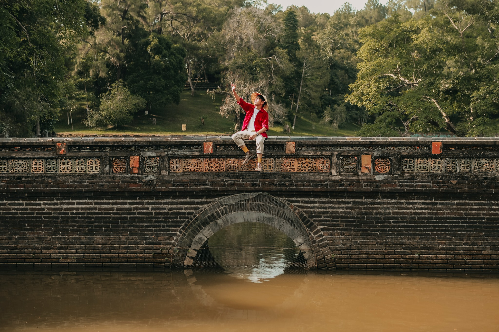

Đi Huế không hề chán, nhất là đi cùng nhau!
Huế nổi tiếng với những công trình kiến trúc cổ kính cùng không khí nhẹ nhàng, đầy tĩnh lặng. Cái tĩnh lặng ấy đôi khi lại khiến người trẻ như chúng ta chẳng thấy thú vị tí nào, nhưng Huế có thật sự nhàm chán như ta nghĩ không?Huế ư, nhắc đến nơi đó chắc hẳn không ít bạn trẻ có thể diễn tả bằng hai từ: "Chán lắm!". Quả thật khi đến Huế, bạn sẽ dễ dàng cảm nhận ngay được sự bình yên đến lạ thường hiện rõ từ không khí, cảnh vật cho đến con người. Và chính từ những thứ có vẻ quá tĩnh lặng so với cuộc sống vốn dĩ ồn ào, sôi động nên việc thấy "chán" có lẽ cũng là điều đương nhiên. Nhưng đó là do bạn chưa cảm nhận hết được sự thú vị mà vùng đất "mộng mơ" này đem lại thôi.
Ở Huế bạn có thể đắm mình trong không khí thơ mộng, nhẹ nhàng cùng những công trình kiến trúc ấn tượng gắn liền với sử Việt ngàn năm, ở những homestay xinh đẹp lại còn chất ngất. Không chỉ như thế, món ăn ở Huế cũng khiến bao người ngất ngây vì vừa đa dạng lại ngon, những quán cà phê đủ mọi phong cách nhưng cũng không quá cầu kì đúng như bản chất của người xứ Huế luôn nhỏ nhẹ, điềm đạm và thân thiện vô cùng.
1. Đại nội Huế
Để cảm nhận rõ nét nhất sự cổ kính của thành phố này thì ắt hẳn nơi đầu tiên bạn nên đặt chân đến chính là Đại Nội Huế. Đại Nội Huế được UNESCO công nhận là Di sản văn hóa thế giới năm 1993, nơi đây được xem như hình ảnh biểu tượng gắn liền với vùng đất cố đô. Bên trong Đại nội được chia làm 3 khu: Kinh thành, Hoàng thành và Tử cấm thành.

Với kiến trúc lâu đời và độc đáo mang đậm màu sắc lịch sử dân tộc, bạn cũng tha hồ chiêm ngưỡng mà vẫn có thể cho ra đời những bức ảnh vô cùng "nghệ" tại Ngọ Môn Quan, Điện Thái Hòa hay Thái Tổ Miếu,... Và mới đây, Đại nội Huế đã cho phép du khách tham quan vào ban đêm từ 19 – 22h và đây chính là cơ hội để bạn có dịp "ồ á" vì nét đẹp lộng lẫy, rực rỡ đèn hoa về đêm của nơi này đấy!
2. Lăng Tự Đức
Người ta nói, đến Huế ngoài tham quan Kinh thành thì lăng và chùa là những địa điểm không thể không ghé đến. Nghe đến lăng, nhiều bạn vẫn nghĩ đến những nơi uy nghiêm, không khí có phần lạnh lẽo, u tịch. Nhưng bạn đã sai rồi, lăng tẩm ở Huế được xem là những công trình rất đặc sắc bởi mỗi một lăng lại mang một lối kiến trúc riêng thể hiện như tính cách của các vị vua đã nằm xuống.

Trong hàng loạt những lăng mộ của các triều vua, lăng Tự Đức là điểm đến được nhiều bạn trẻ ghé thăm nhất bởi sự thơ mộng và cảnh vật thanh bình bao phủ nơi đây. Bước đến lăng, chắc chắn bạn vẫn không tin vào mắt mình bởi nơi đây thật sự đẹp như một công viên rộng lớn, nét đẹp kiến trúc như hòa cùng nét đẹp của thiên nhiên một cách vô cùng "vi diệu". Vẫn là nét đẹp cổ kính tựa như Đại nội nhưng ở đây bạn chắc chắn sẽ cảm thấy thoải mái hơn bởi bốn bề là cây cối xanh um, đồi núi nhấp nhô và chiếc hồ rộng lớn, mát mẻ vô cùng.
3. Lăng Khải Định
Đến lăng Khải Định người ta sẽ không nghĩ đơn giản là chụp một vài bức ảnh để làm kỷ niệm. Điều người ta muốn làm được trong từng bức ảnh là thể hiện rõ được kiến trúc, nghệ thuật của khu lăng mộ nổi tiếng này. Kiến trúc của lăng Khải định vượt ra ngoài những quy tắc của kiến trúc truyền thống thời Nguyễn. Ở đây người ta nhìn thấy cái độc, cái mới, cái lạ, cái phóng khoáng, cái tự do và đôi khi là một chút ngông nghênh. Chính cái kiến trúc đó giúp cho những bức ảnh của bạn thể hiện đúng cái cá tính, cái chất của bạn.
Muốn chụp hình đẹp ở lăng Khải Định thì nên đến đây vào tầm tháng 3 – 6. Lúc này chưa vào hè, người đi du lịch không quá đông, thời tiết của Huế cũng rất đẹp, vừa mới qua mùa đông nên mọi thứ cũng đang còn mới mẻ, không gian xung quanh đều mơn mởn. Tốt nhất là bạn nên dành nhiều chút thời gian để đi tham quan, khám phá kiến trúc nghệ thuật của khu lăng tẩm này rồi hãy đi chụp hình.
4. Lăng Minh Mạng
Không phá cách hay hiện đại, lăng Minh Mạng mang vẻ đẹp uy nghi, chuẩn mực của kiến trúc lăng tẩm triều Nguyễn. Lăng tọa lạc ở vị trí được xem là "đắc địa", nơi giao thoa nữa hai dòng Tả Trạch và Hữu Trạch, hợp lại thành sông Hương mộng mơ. Khuôn viên có diện tích 1.750 m, mang vẻ đẹp của bức tranh sơn thủy hữu tình.


Quần thể di tích gồm cung điện, lâu đài, đình tạ bố trí đăng đối trên một trục dài 700 m, bắt đầu từ Đại Hồng Môn đến chân La thành sau mộ vua Minh Mạng. Tại đây, bạn có thể sống ảo ở khu vực hồ sen rộng lớn, dãy tượng quan văn, quan võ uy nghiệm, check-in ở cổng tam quan với background đẹp tựa tranh vẽ...